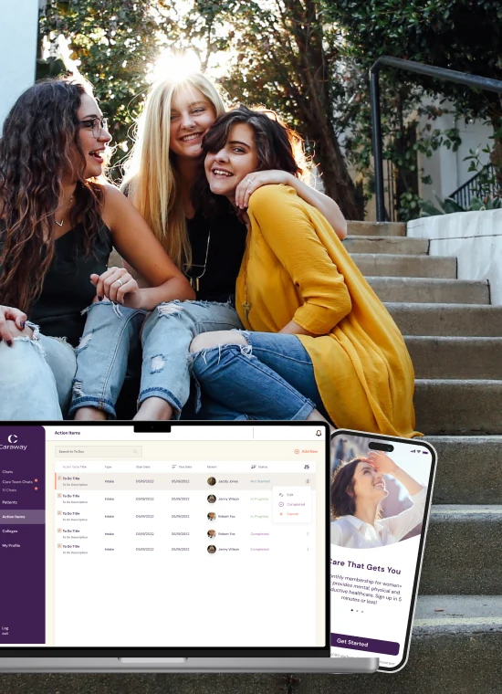

CONNECTED
Two products, one system
The app and the dashboard share colours, type and components.
Caraway Health · Product Design Case Study
The care you need, all in one place: a health app for Gen Z women and a web dashboard for the care team behind it.

Caraway provides mental, physical and reproductive health care for Gen Z, with a focus on women’s health. A member can chat with a therapist, reach a doctor when she is sick, or get birth control advice and prescriptions, 24/7, from her phone.
The care team works on the other side: a web dashboard with each member’s information, chat, and tasks set for her needs.
Mission & user
Caraway’s mission is to change how Gen Z experiences healthcare: treat what she needs in the moment, and give her the skills to manage her health for life.
Our primary user has just moved to college. She is away from home and parental care for the first time, adapting to a new place and new friends, and managing her health on her own.

A CARE PLATFORM THAT IS
WHAT SHE NEEDS
PROCESS & CONTRIBUTION
1. Discovery
Caraway launched in the US, so most of our research was remote: data tables, statistics, reports and a detailed competitor analysis to find where Caraway should sit in the market.
To understand her behaviour, we looked at which devices she uses, how she uses social media and apps, how she likes to communicate, and what her days and years look like.
RESEARCH ACTIVITIES
2. Wireframes
I created wireframes to check that our thinking matched the partner’s vision. They kept stakeholders on the same page and kept the cost of experimenting low.
Once the concept was approved, we designed the screens in Figma. The scope was large and kept changing, so we worked in an agile way and showed stakeholders our progress every week.
THE WIREFRAMES DEFINED
3. Design system
Colours, type and brand elements had to stay the same across the member app and the care team dashboard, so the product feels like one service.
The app also needed to feel bright and engaging, with light game elements, while staying simple and clearly prioritised. We tried several colours, fonts and component styles to get there.
WHY A SYSTEM
4. Product
The member app pairs a friendly look with simple daily tasks that build healthy habits. For medical professionals, a web app brings each member’s information and conversations into one structured dashboard.
MEMBER APP
CARE TEAM DASHBOARD
DESIGN OUTCOME
A member app and a care team dashboard on one design system, which kept the product consistent as the scope grew.
CONNECTED
The app and the dashboard share colours, type and components.
RESILIENT
New features and several rebrands rolled out smoothly on the same system.
ALIGNED
Progress shown every week kept the partner close to every decision.
UX research · Competitor analysis · Wireframing · Design systems · Healthcare UX · Mobile & web design · Stakeholder collaboration
NEXT PROJECT